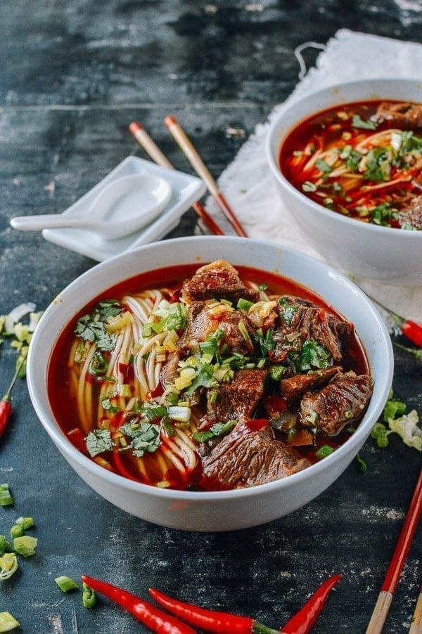

Mala Beef Noodle Soup

image of mala beef noodle soup (thewoksoflife.com)
ingredients
- wheat noodles
- beef
- chili oil
- soy sauce
- garlic
- tomato
- ginger
- sugar
Steps
- Fill one pot with water, add ginger, scallions, and beef. Cover the pot and bring to a boil. Then simmer for ten minutes before removing it from heat.
- heat oil...
- transfer 1st pot to 2nd...
- let pot sit for an hour
- cook noodles